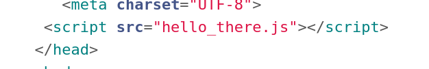
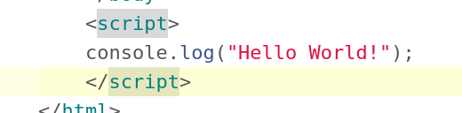
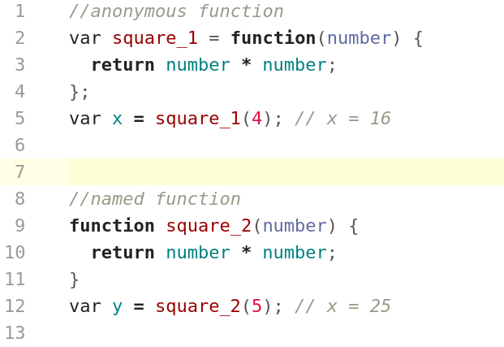
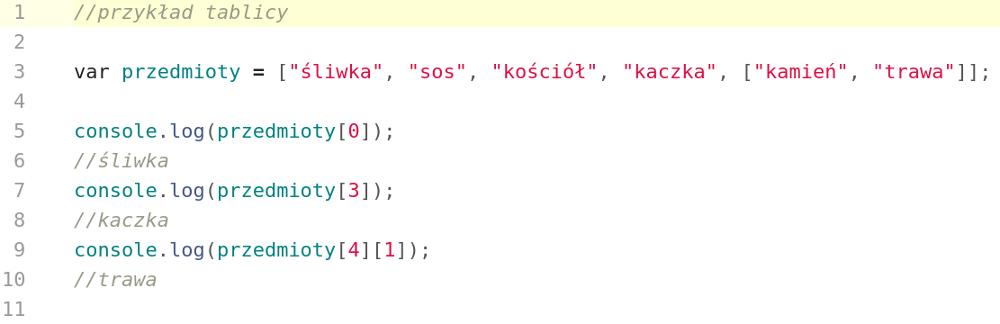
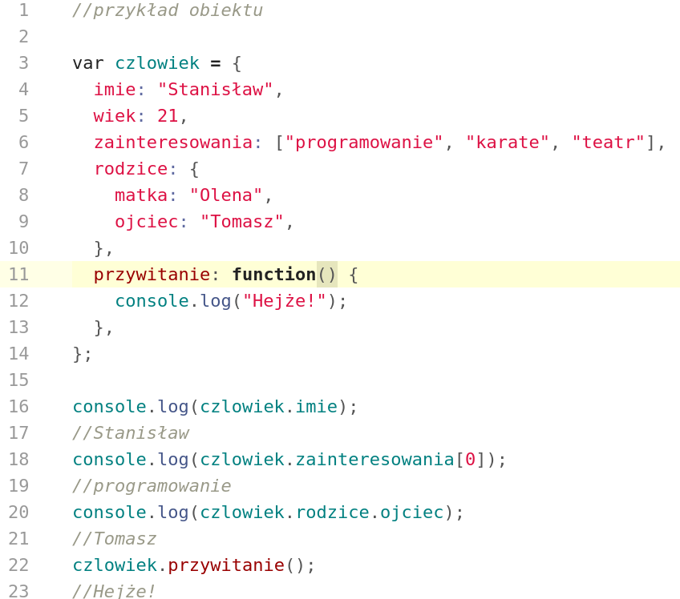
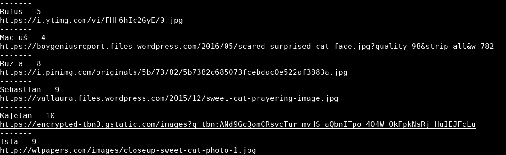
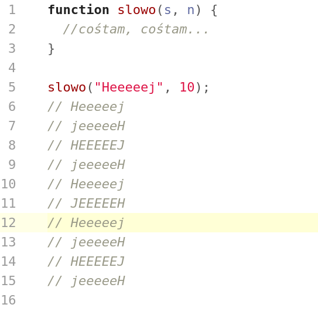
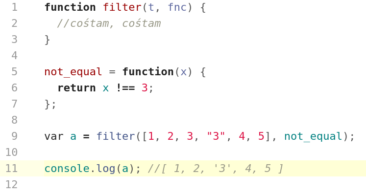

Warsztaty Webowe grupa średniozaawansowana
JavaScript jest językiem programowania używanym w przeglądarkach internetowych po stronie klienta, który może wprowadzić element interakcji pomiędzy stroną ,a użytkownikiem. Jest to jedno z trzech narzędzi które każdy web deweloper powinien znać. (HTML, CSS, JS)

Podstawowa składnia JS-a została już przedstawiona podczas warsztatów w grupie początkującej, tam też odsyłam po materiały na ten temat.
Tutaj można znaleźć dużo przydatnych informacji:
Do wprowadzenia skrytpu na strone możemy użyć HTML-owych tagów script w następujący sposób:
można też podpiąć nasz kod w ramach osobnego pliku
Na początek będą nas interesowały dwa sposoby zdefiniowania funkcji - anonymous function oraz named function:
Przykład 1:
Przykład 2:
Skopiuj tablicę z pliku koty do swojego skryptu, następnie napisz funkcję która wypisze n pierwszych rekordów z owej tablicy (n bedzie parametrem funkcji), w formie <Imię kota> - <poziom słodkości> \n <link> (znaki " < " oraz ">" pomijamy). Jeśli przekazane do funkcji n będzie zbyt duże, należy wypisać odpowiedni komunikat.
Przykład:
Tym razem skopiuj tablicę z pliku troche_inne_koty, następnie napisz funkcję która zachowa się tak samo jak funkcja z poprzedniego zadania. Czym plik koty.txt się różni od troche_inne_koty.txt?
Napisz funkcję która przyjmuje parametry s i n, gdzie s to pewien string a n to dodatnia liczba całkowita, funkcja powinna wypisać w konsoli słowo n, s razy, co drugi wyraz ma być pisany od tyłu, a co trzeci samymi wielkimi literami.
Przykład:
Napisz funkcję, która jako parametry przyjmuje inną funkcję f(zał. zwracającą tylko True lub False) oraz oraz tablicę a.
Funkcja ma zwracać nową tablicę w której znajdą się te elementy z a, dla których funkcja f zwróciła True.
Przykład:
Źródła:
https://developer.mozilla.org{kind=link}
{kind=link}
{kind=link}
{kind=link}
{kind=link}
{kind=link}
{kind=link}
{kind=link}